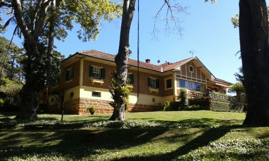

<!DOCTYPE html>
<html lang="pt-br">
</html>
<title>Fazenda Monte Bello</title>
    <meta charset="UTF-8">
    <meta http-equiv="X-UA-Compatible" content="IE=egde">
    <meta name="viewport" content="width=device-width, initial-scale=1.0 ">
    <link rel="stylesheet" href="index.css">
 </head>

<body>
    <header>
        <div class="center">
          </img>
        </div>
        <h1>Fazenda Monte Bello</h1>
      </header>
<section>
<p>
     A Fazenda Monte Bello, localizada em Ribeirão Claro, Paraná, possui uma rica história que remonta ao período de colonização da região no final do século XIX e início do século XX. Fundada em 1900, a fazenda foi uma das propriedades pioneiras na região, desempenhando um papel crucial no desenvolvimento agrícola e econômico local.

    A propriedade foi adquirida por Francisco Rodrigues da Cunha, conhecido como Chico Palma, um dos primeiros colonizadores de Ribeirão Claro. Ele foi um dos responsáveis por abrir novas fronteiras agrícolas, contribuindo significativamente para o crescimento da área. A Fazenda Monte Bello destacou-se pelo cultivo de café, que era a principal atividade econômica da época e um motor de desenvolvimento para o município.
    
    Ao longo dos anos, a Fazenda Monte Bello cresceu e se modernizou, incorporando novas técnicas agrícolas e expandindo suas atividades para além do café, incluindo a criação de gado e outras culturas. A propriedade tornou-se um exemplo de gestão agrícola eficiente e sustentável, mantendo a produtividade ao mesmo tempo em que preservava o meio ambiente.
    
    Além de sua importância econômica, a Fazenda Monte Bello também tem um valor histórico e cultural significativo para Ribeirão Claro. Ela representa a tradição e a herança dos primeiros colonizadores, refletindo a trajetória de desenvolvimento do município. A fazenda é um símbolo do espírito pioneiro e da capacidade de adaptação e inovação dos agricultores da região.
    
    Atualmente, a Fazenda Monte Bello continua a ser uma referência em agricultura na região de Ribeirão Claro. Ela atrai visitantes interessados em conhecer sua história, suas práticas agrícolas e suas belezas naturais. A fazenda mantém viva a memória de seus fundadores, celebrando a rica história de colonização e desenvolvimento de Ribeirão Claro.
</p>
</section>
</main>


</body>